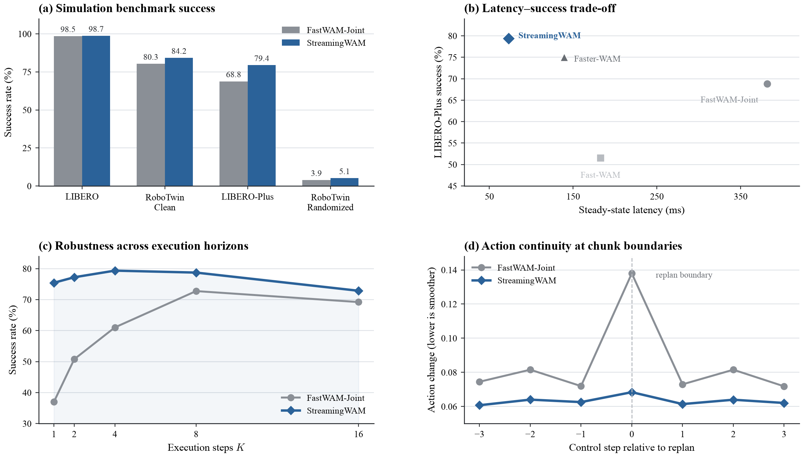
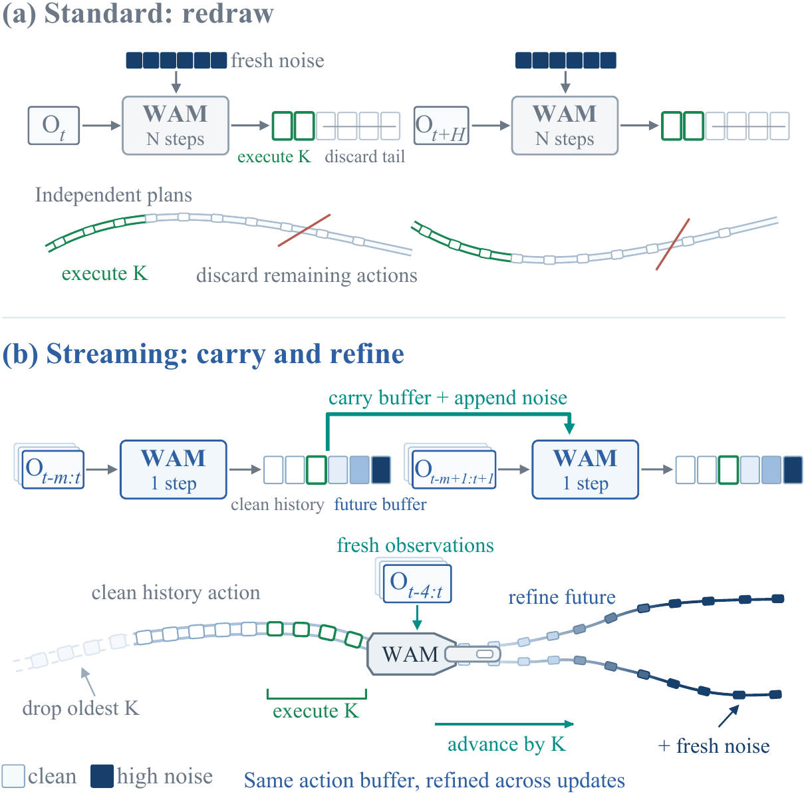
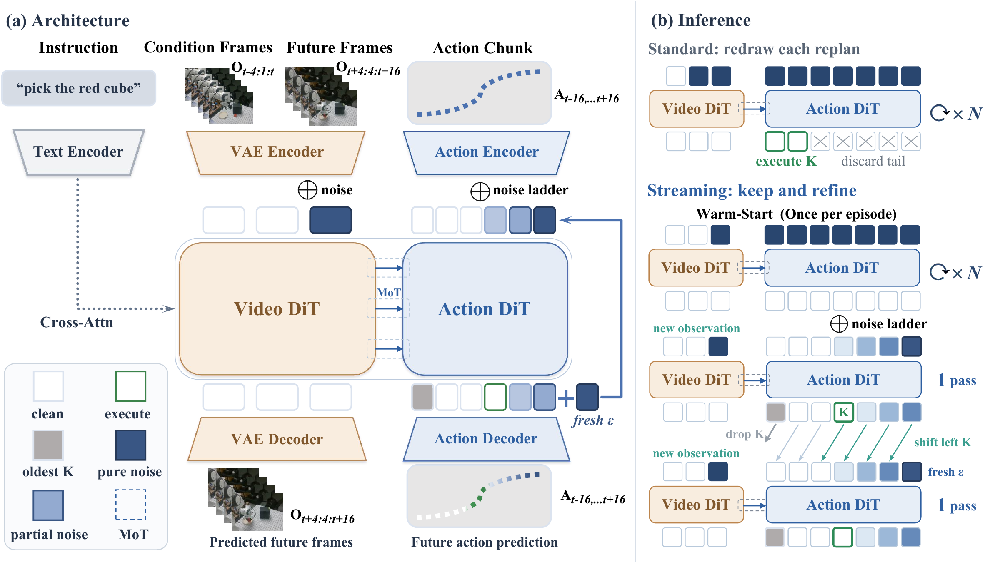
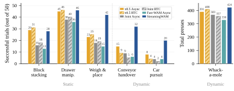

Simulation results and analysis
StreamingWAM improves benchmark success while reducing steady-state latency, remaining stable across execution horizons, and smoothing action-chunk transitions.

Streaming World Action Modeling via
Chunk-Wise Staircase Flow Matching
World Action Models (WAMs), often built upon pretrained video-generation world models, have emerged as a promising framework for general-purpose and open-ended robot control. However, their real-world deployment often suffers from discontinuous and jerky execution. Existing methods typically address this issue by either improving inference efficiency or enhancing action continuity across prediction chunks, without jointly addressing both challenges. To bridge this gap, we propose StreamingWAM, a streaming-diffusion framework for WAM-based robot control. StreamingWAM combines a noise ladder for chunk-wise action prediction, a prefix rollout module for cross-chunk continuity, and dense video-history memory for temporally consistent conditioning. Experiments on LIBERO, LIBERO-Plus, RoboTwin 2.0, and real-world robotic tasks demonstrate that StreamingWAM improves action continuity across static and dynamic settings, achieving competitive performance with the lowest response latency among the evaluated WAMs using the same backbone. Further analysis shows that smoother action transitions and faster responses to state changes contribute to higher success rates on the manipulation tasks, while the streaming staircase reduces sensitivity to the execution horizon K.

StreamingWAM combines a staircase noise schedule, a clean action prefix, and dense visual history to turn chunk-wise diffusion into a rolling control process.

The results are organized into a simulation analysis and a separate real-robot comparison.
StreamingWAM improves benchmark success while reducing steady-state latency, remaining stable across execution horizons, and smoothing action-chunk transitions.

Per-task comparisons cover static manipulation, dynamic interception, and repeated button pressing.

A continuous four-trial sequence is featured first, followed by three static and three dynamic real-robot tasks.
The presentation view is shown at full size; the three synchronized policy views are concatenated alongside it in the same order used by the model.
Six tasks grouped by whether the target remains fixed or changes during execution.
Both comparison tasks are shown together. Select a trial and camera view, then use the shared controls to compare all three policies.
The current code release contains LIBERO-Plus training and rolling inference. The supplementary archive contains all 59 MP4 files shown on this page.